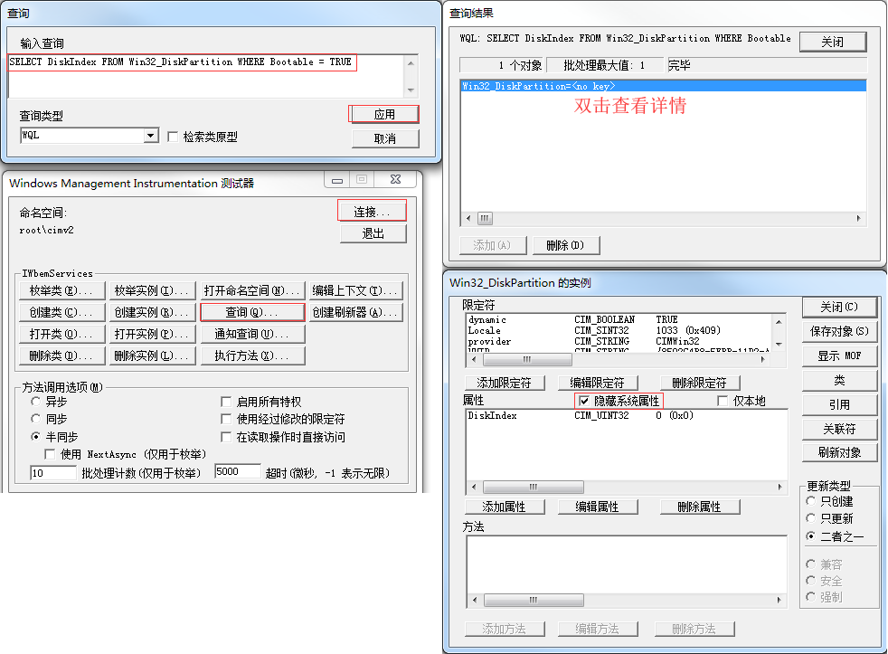

WBEMTest.exe
WMI Browsing Tools | Microsoft Docs)。WBEMTest.exe要不然就按照WMI Browse Engine Manager Test进行记忆吧。WBEMTest.exe要不然还可以WMI Browse Every Machine Test进行记忆(浏览每个机器)。
查询
查询得到系统盘所在硬盘的ID：SELECT DiskIndex FROM Win32_DiskPartition WHERE Bootable = TRUE。
假定我们得到的结果是DiskIndex=0，查询系统盘所在硬盘的硬盘序列号：SELECT SerialNumber FROM Win32_DiskDrive WHERE Index = 0。
然后得到的结果就是硬盘序列号。
